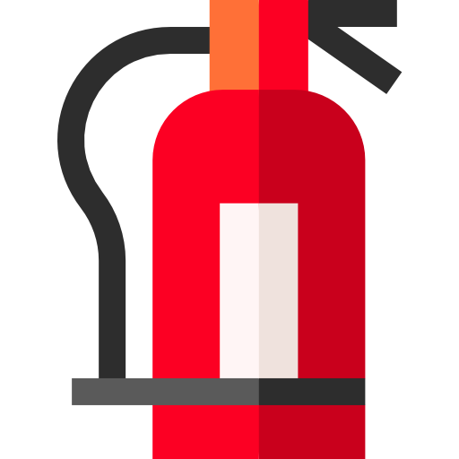

PREVENÇÃO E COMBATE A INCENDIOS
SEGURANÇA E TRABALHO
Um incêncio pode causar grandes tragédias, certas medidas de seguranças são esseênciais para evita-lo. É
fundamental identificar e obter a segurança, quando da parte corporativa até a colaborativa, e buscar
com antecedência as precauções.
NORMAS
O responsável pelo local tem a obrigação de conhecer os critérios segurança para a segurança de todos.
Observando essas informações primordiais, devemos reconhecer como ocorre esses acidentes e como preveni- lós.
Observando essas informações primordiais, devemos reconhecer como ocorre esses acidentes e como preveni- lós.
observe abaixo: